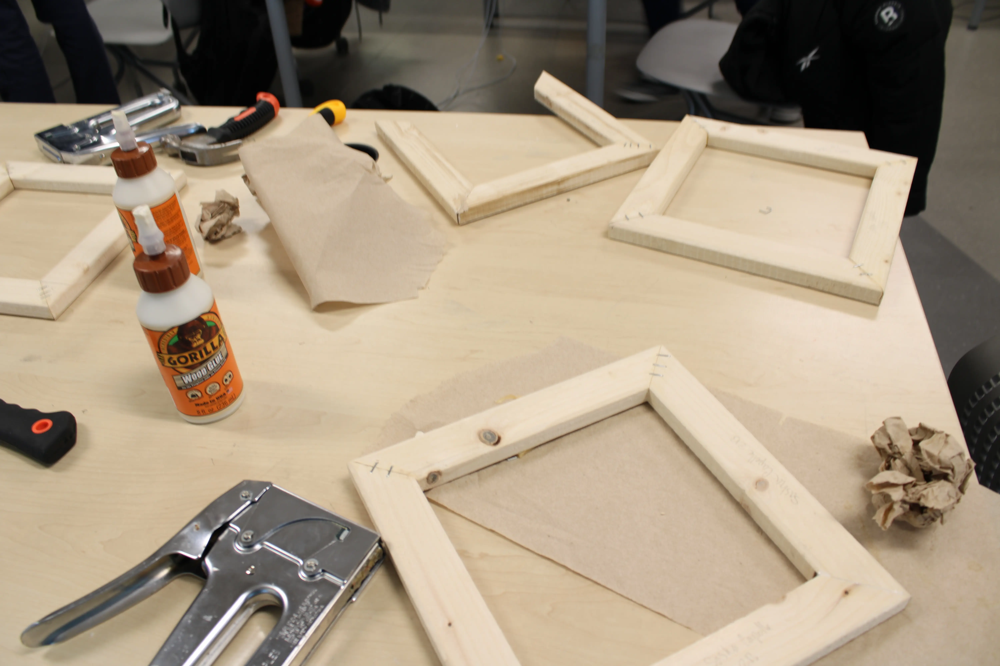

<!DOCTYPE html>


<html lang=en>


    <head>
   

        <meta charset="UTF-8"> 

        <meta name="viewport" content="width=device-width, initial-scale=1.0">
      
        <meta name="author" content="Your Name">


        <title>Marvelous' Screenprint</title>


        <link rel="stylesheet" href="/style.css">
        

        <link rel="icon" type="image/png" href="/images/favicon.png">


    

    
     </body>
</html>
<a href="https://marvelousk-tech.github.io/">Back To Home Page</a>
        <h1>ScreenPrinting Experiment</h1>
        <h2>The Experiment</h2> 
        <p>In our classroom project with our teacher Mr. Sinusis, we did a Screen Printing Project where we chose something that we thought needed to change in the world, or something that could motivate someone. We used Wood, glue, mesh, nails and more to make a screen printing frame that we put the idea we chose on. After that we made copies of our screen printed idea on paper, Tshirts, and fabric. Finally we copied our Idea on a box which made it look cool. 
</p>
        <h2>Steps For The Experiment</h2>
        <p>First We chose a problem or an idea that we though should change, after that we measured some wood pieces that we turned into a square or rectangle shape while making it a reasonable size for our design. we later stapled a mesh to the board we made. after this using a screenprining iron we places our design unto the mesh which we later pealed off to reveal our idea on the mesh. then we applied a lot of tape to parts of the project to start the painting step, we then painted our ideas on the mesh making it look as wonderful as possible. Finally we used the paint we had on our board and a squeegy to copy our projects unto different things like paper, boxes, Tshirts, and fabric. This project took us lots of class time and lots listening to instructions.  </p>
        <h2>What We Learned</h2>
        <p> During the screen printing project, We learned how to take a design and print it onto a surface using a screen, ink and a squeegee. It was interesting to see how each step of the process worked together to create the final product. We learned how important it is to be patient and pay attention to details because even small mistakes can affect the print. This project also helped me improve my creativity and gave me a better understanding of how designs are made and printed on things like T-shirts and Fabrics.</p>
      

        
        


   
        <iframe 
            src="https://drive.google.com/file/d/1eOQZGlFO8Dki_28wye4tBJzXwPi-v3EV/preview"
            width="560" height="315"
            allowfullscreen>
        </iframe>
        
    </body>
</html>
